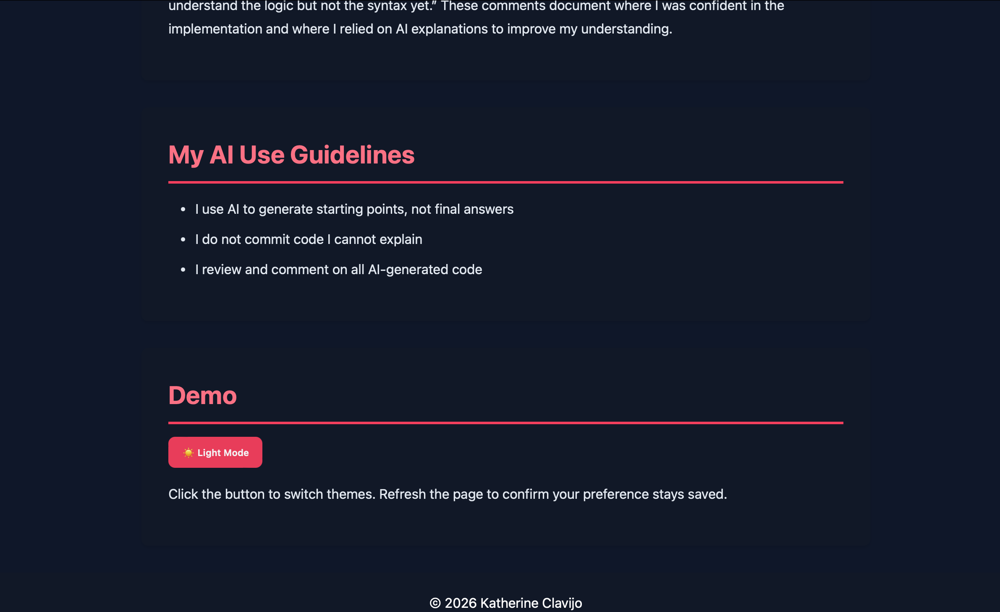

Feature Overview
I used AI assistance to implement a dark mode toggle using HTML, CSS, and JavaScript. This feature allows users to switch between light and dark themes for accessibility and user preference.
AI Collaboration
AI generated the initial structure for the toggle and JavaScript logic. I reviewed the code line by line, added comments, and modified colors and layout to match my existing portfolio design.
AI Prompt Used
The following prompt was used to guide the AI when generating the initial dark mode toggle feature:
Help me add a dark mode toggle to my HTML portfolio page.
Requirements:
- a button that toggles dark mode on/off
- use a CSS class like .dark-mode
- save preference with localStorage so it persists after refresh
- keep code beginner-friendly
- include comments explaining what each part does
Understanding Spectrum
The code includes comments that reflect my level of understanding, ranging from “I wrote this” to “I understand the logic but not the syntax yet.” These comments document where I was confident in the implementation and where I relied on AI explanations to improve my understanding.
My AI Use Guidelines
- I use AI to generate starting points, not final answers
- I do not commit code I cannot explain
- I review and comment on all AI-generated code
Demo
Click the button to switch themes. Refresh the page to confirm your preference stays saved.
